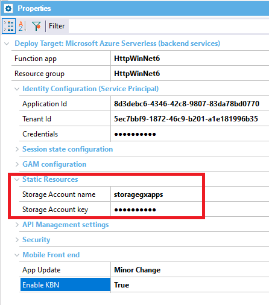
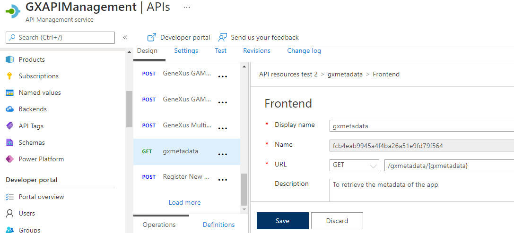
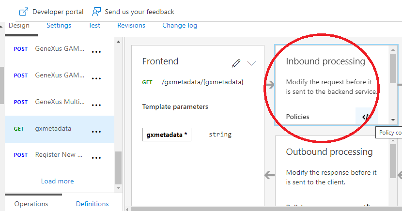
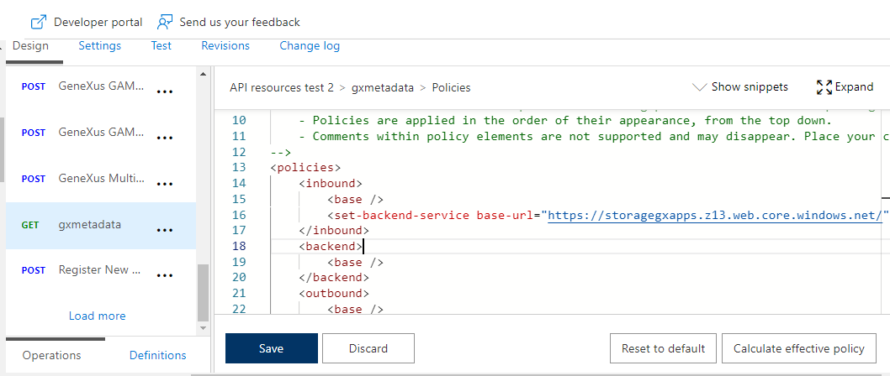
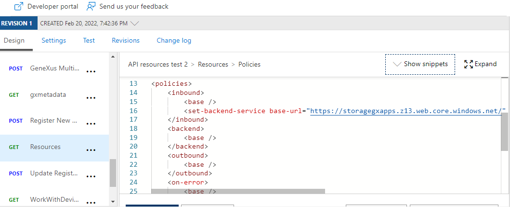

A specific problem to solve in a Serverless architecture is that the functions are "microservices" and in order to access other resources, such as static images or videos, for example, it is necessary to deploy those resources on a static website.
The same happens with the gxmetadata of mobile apps, which are static resources that need to be accessed by the mobile client to update the app (major or minor change), or to guarantee that the services are available to the knowledge base navigator (KBN). Those features are activated through the Enable KBN property and App Update property at deploy time.
The static resources in mobile panels are included in the app package (.apk or .ipa). Therefore, in general, they are accessed from there, except when an image is added to the app, and only an app update via metadata is necessary. In this case, they are not in the apk/ipa. It looks for the image in the address of the app, plus the location indicated in the images.json file of the gxmetadata.
In order to cover all those cases, we need to store the resources in an Azure Blob Storage and automatically solve the redirection to that location when a resource is requested.
You can use the Static Website feature inside your existing Storage Account from the Function App. It is also possible to use a different one. The front end hosted as a static website doesn’t require a web server to render the pages; instead, only the files are delivered to the clients.
Note: In the case of Angular applications, the static resources are included in the bundle of the app and deployed with it (see Deploy Front-end applications to Cloud Provider Object Storage), so you do not need to follow this document in this case.
In conclusion, if you deploy the back-end services of an app to Azure Serverless and enable the Enable KBN property or App Update property, or have some static resources that should be rendered by the Azure functions, follow the steps below.

To get the Access Key (to fill in the "Storage Account Key" property at deployment), go through the Access Keys pane of the Storage account at the Azure portal.
The deploy engine automatically creates two operations in the APIM management. One is for the gxmetadata, and the other is for the Resources.
For example, the gxmetadata operation looks as follows:

At this point, you need to configure the policy to redirect to the Static WebSite using the Azure portal.
To do so, select gxmetadata operation, and go through the Inbound processing pane.

Next, add the following and replace the base-url of the example with yours (the endpoint of the Static WebSite or the CDN endpoint if you configured one).
<inbound> <base /> <set-backend-service base-url="https://storagegxapps.z13.web.core.windows.net/" /> </inbound>
It should looks as follows:

Then, do the same with the Resources operation.

Through MSBuild scripts, the third MSBuild script that should be executed (after having executed the create deploy and create package scripts) is as shown below:
MSBuild.exe /nologo /verbosity:minimal /ToolsVersion:4.0 "C:\Genexus\DeploymentTargets\AzureServerless\deploy.msbuild" /p:AZURE_SERVERLESS_FUNCTION_APP="HttpWinNet6" /p:AZURE_SERVERLESS_RESOURCE_GROUP="HttpWinNet6" /p:AZURE_SERVERLESS_SP_APP_ID="xxxxxx" /p:AZURE_SERVERLESS_SP_CREDENTIALS="xxxxx" /p:AZURE_SERVERLESS_AZURE_STORAGE_ACCOUNT="storagegxapps" /p:AZURE_SERVERLESS_AZURE_STORAGE_ACCOUNT_KEY="xxxxxx" /p:AZURE_APIM_SERVICE_NAME="GXAPIManagement" /p:AZURE_APIM_RESOURCE_GROUP="apimanage" /p:AZURE_APIM_API_ID="APIresTest2" /p:AZURE_APIM_API_DISPLAY_NAME="API resources test 2" /p:AZURE_APIM_API_SERVICE_URL="https://httpwinnet6.azurewebsites.net" /p:AZURE_APIM_API_PATH="APIresTest2" /p:AZURE_APIM_API_SUBSCRIPTION_REQUIRED="false" /p:APP_UPDATE="MINOR" /p:ENABLE_KBN="True" /p:GENERATOR=".NET" /p:APPLICATION_NAME="DpuMeta_20220223141801" /p:DEPLOY_PATH="C:\models\Test\NETSQLServerCloud\Deploy\AZURE_SERVERLESS\DpuMeta\20220223141801" /p:GX_PROGRAM_DIR="C:\Genexus" /p:ProjectName="DpuMeta_20220223141801" /p:TargetId="AZURE_SERVERLESS" /p:ObjectNames="Dashboard:MenuAir;SDPanel:Panel1" /p:DeployFullPath="C:\models\Test\NETSQLServerCloud\Deploy\AZURE_SERVERLESS\DpuMeta\20220223141801" /t:Deploy
| Backlinks |
| Toc:Application Deployment tool |